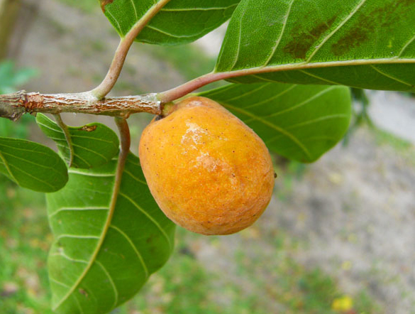
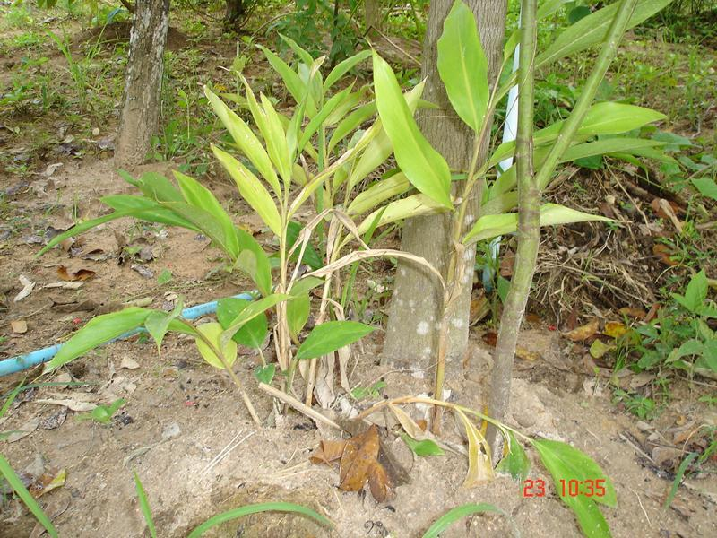

สมุนไพรไทย 22 ชนิดเสี่ยงสูญพันธุ์ ประกาศคุ้มครองและควบคุม 7 ชนิด


รายชื่อ “สมุนไพรไทย” 22 ชนิดเสี่ยงสูญพันธุ์ เหตุเติบโตช้า เมื่อใช้ต้องใช้ทั้งต้น หรือทั้งราก หรือใช้บ่อยจึงรักษาได้ คัดเลือกสมุนไพร 7 ชนิด ออกประกาศคุ้มครองและควบคุม ผู้ครอบครองต้องแจ้งจำนวนที่มี เพื่อทำแผนการใช้และการปลูกทดแทน
โดยเราควรจะรู้ประโยชน์ของสมุนไพรแต่ละชนิด เพื่อให้เห็นถึงความสำคัญในการใช้สมุนไพรเหล่านี้ในการบำรุงและรักษาอาการเจ็บป่วยต่างๆ
ประโยชน์ของสมุนไพรแต่ละชนิดมีดังนี้
ถั่วดินโคก
ช่วยขับน้ำ
แก้คางทูม
เทพทาโร
บำรุงธาตุ
ขับพยาธิ
มะตูมนิ่ม
แก้พิษฝี
รักษาน้ำดี
มะหาด
แก้เบื่ออาหาร
ขับปัสสาวะ
หัวร้อยรู
บำรุงหัวใจ
ขับชีพจร
กระทุ่มนา
ขับโลหิต
รักษาโลกผิวหนังทุกชนิด
ขันทองพยาบาท
แก้กามโรค
แก้น้ำเหลืองเสีย
จุกโรหินี
ลดน้ำตาลในเลือด
แก้ร้อนใน
เร่ว
ขับโลหิต
รักษาโลกผิวหนังทุกชนิด
ชะเอมไทย
แก้กามโรค
แก้น้ำเหลืองเสีย
ชิงชี่
แก้อาการเจ็บในทรวงอก
แก้อาการเจ็บคอ อักเสบ
ตับเต่า
ลดไข้
ดับพิษร้อน
นางแย้มป่า
แก้ปวดข้อ
แก้งูสวัด
ปลาไหลเผือก
ถ่ายพิษต่างๆ
แก้วัณโรคระยะบวม
พังคี
แก้อาการขจุกเสียด
รากใช้ตำประคบแก้อาการปวด
มะคังแดง
แก้อาการปวดท้อง
แก้เลือดลมเดินไม่สะดวก
สะค้าน
แก้ท้องอืด ท้องเฟ้อ
แก้ธาตุให้ปกติ
สารภีป่า
แก้กามโรค
แก้น้ำเหลืองเสีย
อบเชยไทย
ช่วยรักษาโรคเบาหวาน
ลดน้ำตาลในเลือด
เฉียงพร้านางแอ
ช่วยสมานแผล
แก้บิด
เถาเอ็นอ่อน
แก้ปวดเสียวเส้นเอ็น
รักษาริดสีดวง
เปราะหอม
บำรุงประสาท
ช่วยในการนอนหลับ
แหล่งอ้างอิง
https://mgronline.com/qol/detail/9600000005955